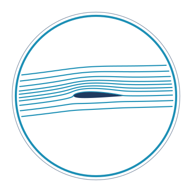

| Project | The Pocket Wind Tunnel (PWT) |
| Research programme | NSLab — the Navier–Stokes Regularity Laboratory |
| First study | NS-001 — Taylor–Green vortex resolution study, Re = 1600 |
| Second study | NS-002 — antiparallel vortex-tube reconnection, Re = 4000 (ReΓ ≈ 16 000), 96³ → 256³ on the GPU |
| Third study | NS-003 — the same reconnection at Re = 2000 (ReΓ ≈ 8 000), with interpolated maxima, image diagnostic and worst-instant verdicts |
| Fourth study | NS-004 — Reynolds ladder, Re = 707 … 4000: what a converged pointwise maximum costs, and how a false convergence shelf was found and corrected |
| Fifth study | NS-005 — the Re = 2000 convergence claim tested to 640³ on a rented A100 and withdrawn: a three-rung plateau broke by 18 %, and at the finest rung the maximum changed which vortical event it belongs to |
| Principal investigator | Michael — aeronautical engineer |
| Instrument, verification & analysis | Claude (Anthropic) |
| Deliverable | Pocket Wind Tunnel.html — one 388 kB file; runs from disk, no network, no dependencies |
| Batch layer | run-ns-long.js (CPU, Node) · nslab_gpu.py (CuPy float64, RTX 3060; rungs above 256³ on a rented A100-80GB) |
| Evidence archive | research/nslab/ — build-stamped runs, ladders, dossiers, analyses |
| Versions | Pocket Wind Tunnel 0.5.1 · NSLab 0.1.2 · GPU runner 0.1.3 |
| Verification | five suites ALL PASS; node build.js --verify refuses to build otherwise |
| Date | 25 August 2026 |